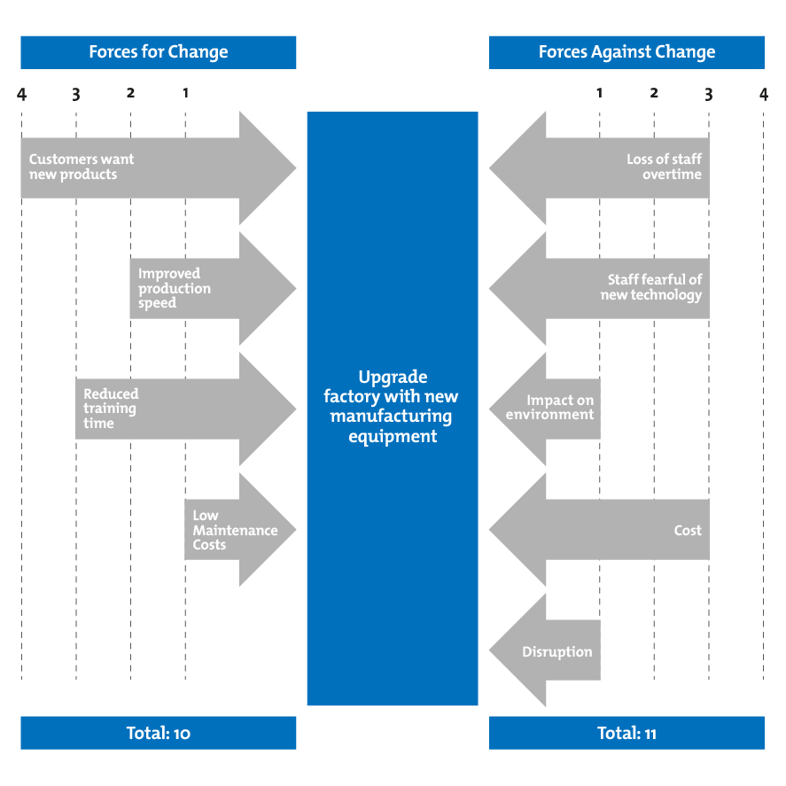

Home | Assignments | Modellenschema | Verslag en Reflectie Tussengesprek | Boekbesprekingen | Korte Reflecties per Vak | Lesopdrachten | Eind Reflectie
Index¶
- Index
- Verandering in Organisaties
- Essentie
- IND.md
- Relatie met Veranderkunde
- Relatie met andere modellen
- Zelfreflectie
Force field analysis¶
Essentie¶
Force Field Analysis, ontwikkeld door Kurt Lewin, is gericht op veranderprocessen
Er zijn in deze theorie twee krachten:
- Bevorderende krachten (driving forces) die verandering stimuleren.
- Remmende krachten (restraining forces) die verandering tegenwerken.
Door het gebruiken van de energiestromingen die al in de richting van je grotere doel bewegen, kan je deze versterken en tegenwerkende krachten uit de weg gaan.
Voorbeeld 1¶


In dit voorbeeld staat een soort uitgebreide Pro-en-Con-lijst omscreven, hieruit kan je opmaken wat de keus is.
De hoofdverandering is de vraag om de fabrieksgereedschap systemen te upgraden.
Links staan de "Forces" voor de verandering, rechts tegen.
Deze worden op gevoel ingevuld en uiteindelijk kan je dan onderaan de totalen optellen. Hierbij kan je dan zeggen dat de "Forces" tegen de verandering met 11 punten toch een duidelijk winnaar is.
Ook zou je kunnen stellen dat als je de "Impact on environment" ietsjes zou kunnen nullificeren dat je dan 10 tegen 9 krijgt, en dat de kant die voor de verandering is toch wel degelijk zou winnen.
Voorbeeld 2¶

Dit voorbeeld is een instantie waar een verandering in een inpasse is beland. beide kanten hebben 8 punten en dus veranderd er niks, de twee kanten strijden even hard, en er zit geen beweging in.
Door te kijken naar wat de "Restraining forces" zijn, stelt dit voorbeeld dat je het "Onbegrip en onvertrouwen" zou kunnen aanpakken. De "Action Plan" is dan ook om het personeel te betrekken in de keuzes (bouwt vertrouwen) en ze ook bij te scholen ( Onbegrip weg halen).
Dit zou er voor zorgen dat er rechts plots minder dan 8 punten staat, en dan begint de verandering al momentum op te bouwen.
Relatie met Veranderkunde¶
Het is een gestructureerde manier om een weloverwogen beslissing te maken, inachtnemend wat de verandering teweeg zou kunnen brengen, en wellicht wat het kost.
Relatie met andere modellen¶
- SWOT analyse zou goed overeenkomen, beiden zetten positieve en negatieve krachten tegenoverelkaar.
Zelfreflectie¶
Ik heb van dit model geleerd:
Theorie¶
Een heldere rationele manier om een afgewogen beslissing te maken over een keuze van pad. Ik kan me goed voorstellen dat dit mij zou kunnen helpen als ik een dilemma voor me heb, of als team.
Je zou als team kunnen stemmen over de hoeveelheid punten, en zo gezamenlijk een beslissing maken.
Persoonlijk¶
Ook in mijn persoonlijk leven heb ik wel eens een pro-en-con-lijstje gemaakt, maar dit is wel echt dat op steroiden. Heel tof om dit zo te zien. Ik kan me voorstellen dat je dit voor zeer grote beslissingen in mijn persoonlijke leven zou willen doen,
Ook zou je de status quo van een ingevoerde verandering kunnen bestuderen. In voorbeeld 2 heb ik duidelijk omschreven dat er toch wel echt iets van een disbalans moet zijn alvorens er iets gaat veranderen.
Relationeel¶
Uiteraard zou je het relationeel kunnen inzetten om als groep echt alle krachten in het veld in kaart te brengen. Alle betrokkenen zouden mogen meespreken, en voelen zich dus gehoord. Mocht er dan achteraf wat veranderen in dat balans, dan is iedereen het er ook mee eens dat het ergens heen gaat.